Screenshot-Verlauf
Nur echte Chromium-WebGL-Aufnahmen nach erfolgreicher Renderer- und Laufzeitprüfung. Bilder belegen einen erzeugten Renderframe, keine ästhetische Freigabe.
Controller-Abschlussvergleich
Zwei 3D-Aktivfarben, eine feste transparente 2D-Ansicht. Die Aufnahmen prüfen besonders verdeckte Eingaben und die beiden Enden des Materialmix.


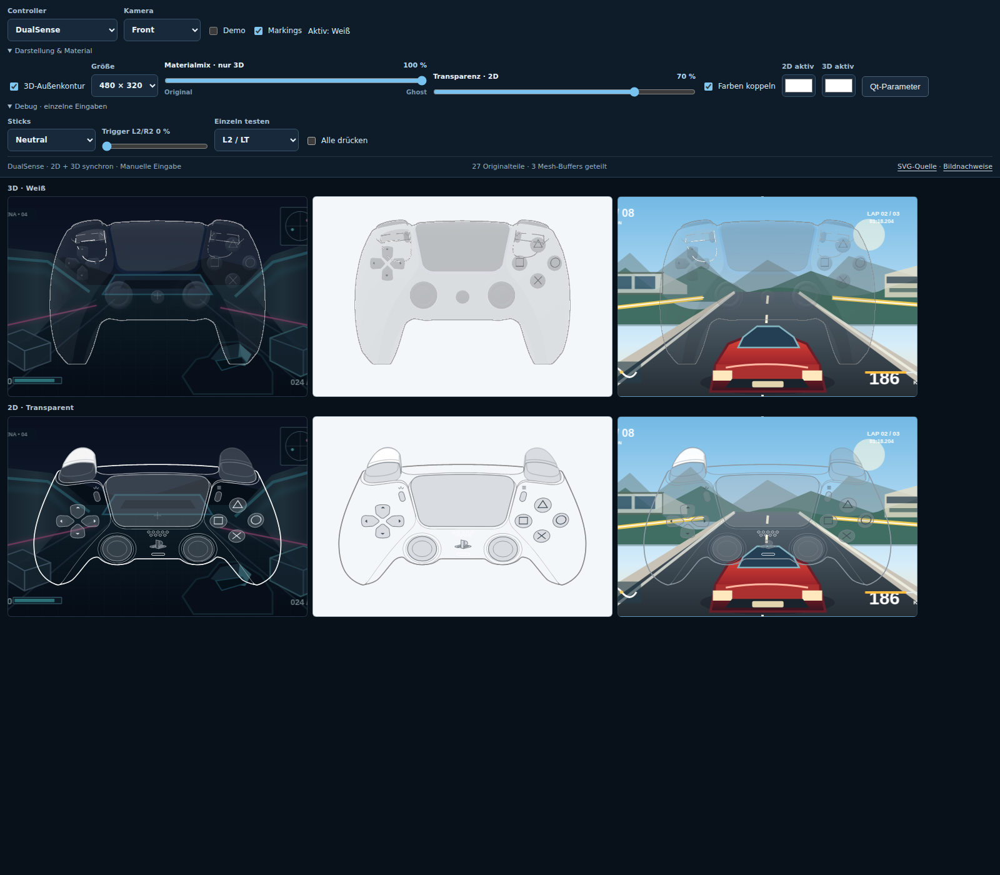
Nur L2 gedrückt – verdeckte Anzeige

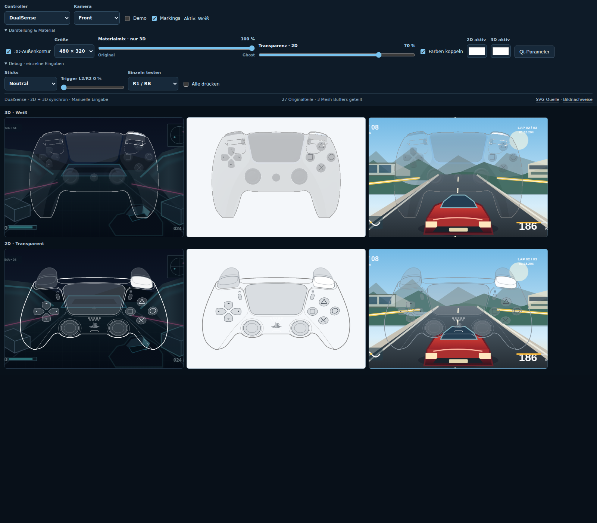
Nur R1 gedrückt – verdeckte Anzeige

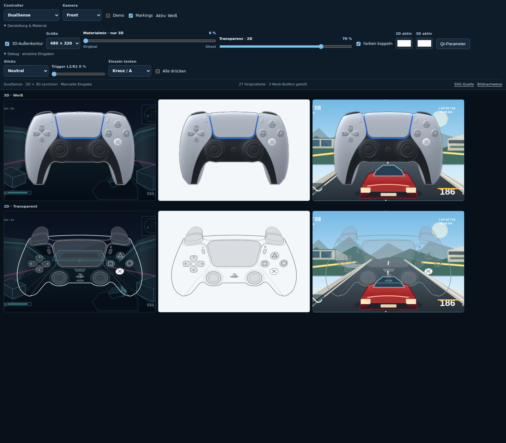
Aktive Face-Taste – Weiß und Blauweiß

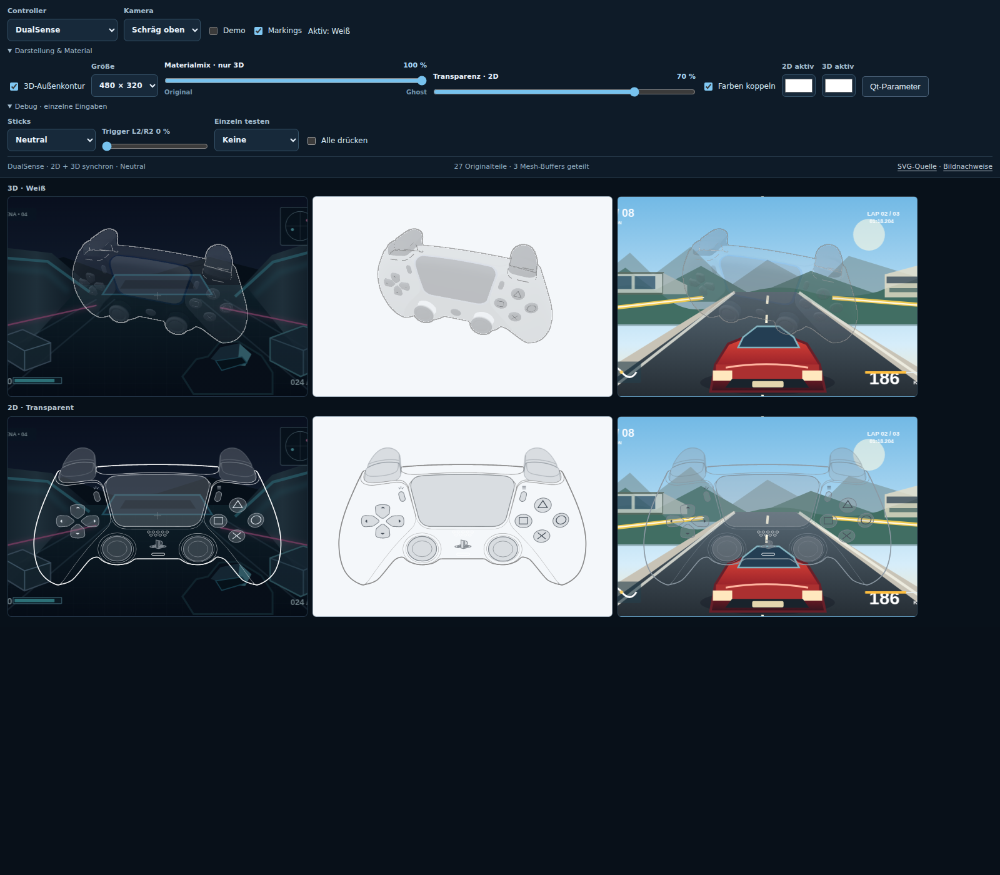
Schräg oben – sichtbare Trigger

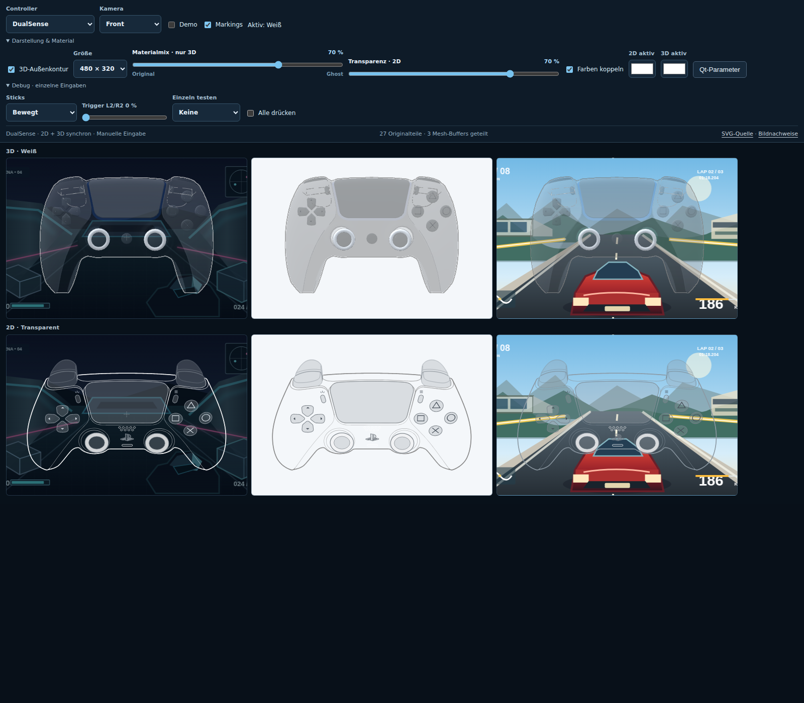
Stick-Bewegung – Ring und Kappe
Modelle und Gesamtansicht

Generic Pro – neutral

Generic Pro – gedrückt

Aktueller Stand – neutral

Aktueller Stand – gedrückt

GameCube – Originalfarben, A/B/X/Y
2D-Controls – visuelle Materialprüfung

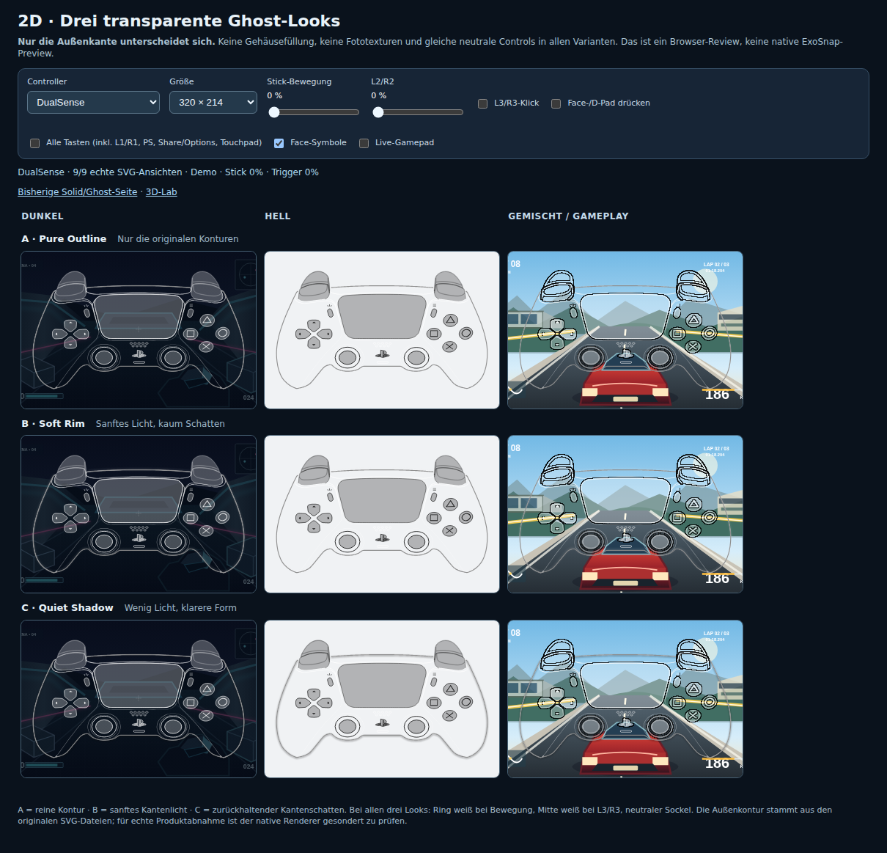
Ghost neutral – alle Control-Farben

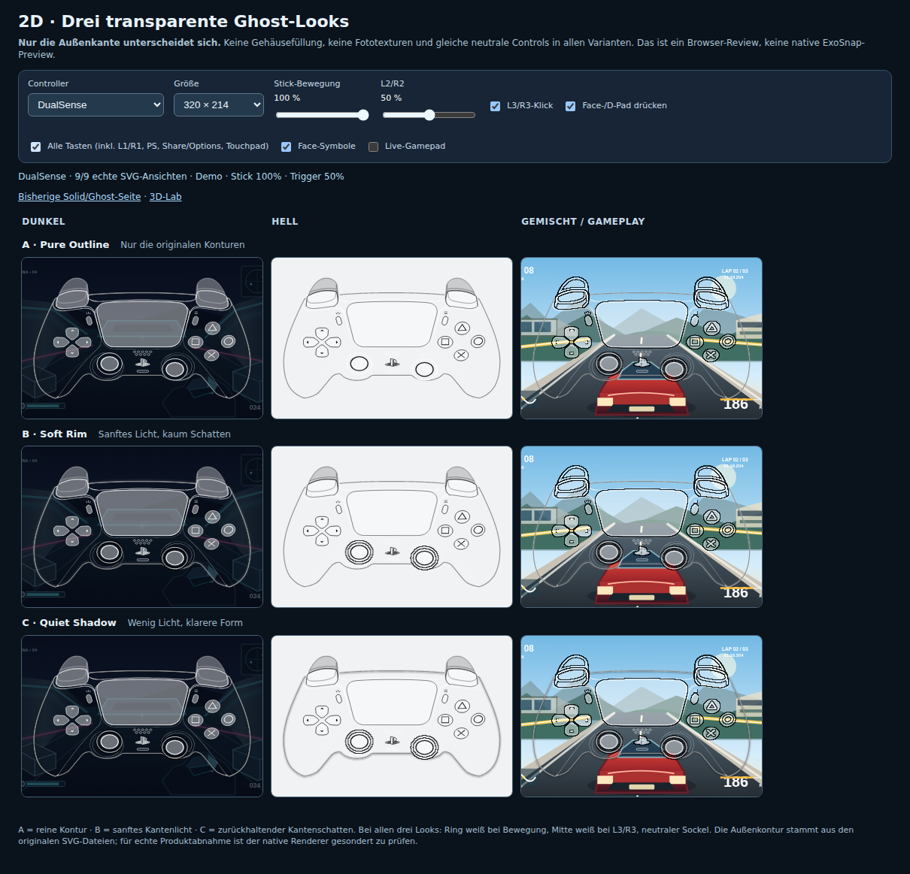
Ghost aktiv – einheitliches halbtransparentes Weiß
2D-Ghost: Kantenlicht und Kantenschatten
Interaktives 2D-Lab · Chromium-Screenshots der Original-SVGs, keine nachbearbeiteten Bilder. Licht sitzt weich außen an der Silhouette; der Schatten bleibt innerhalb der vorhandenen Kontur. Solid bleibt die unveränderte Vergleichsbasis.
Dunkel · Ghost

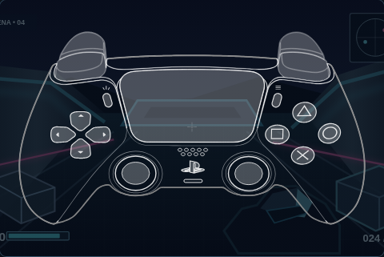
Dunkel – Aus · 0/0 %

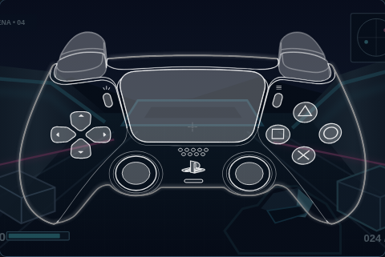
Dunkel – Nur Kantenlicht · 100/0 %

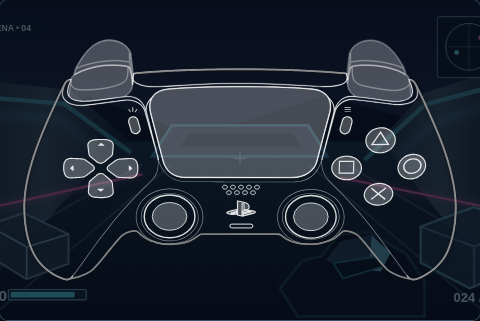
Dunkel – Nur Kantenschatten · 0/100 %

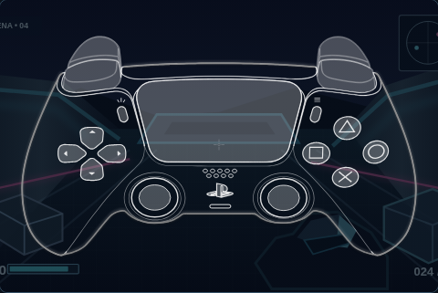
Dunkel – Kombination · 65/65 %
Hell · Ghost

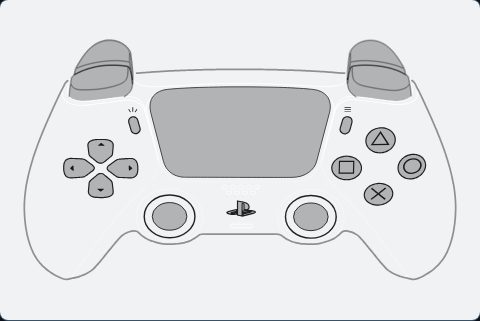
Hell – Aus · 0/0 %

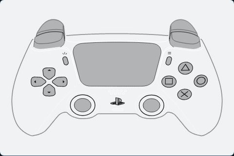
Hell – Nur Kantenlicht · 100/0 %

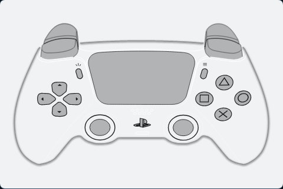
Hell – Nur Kantenschatten · 0/100 %

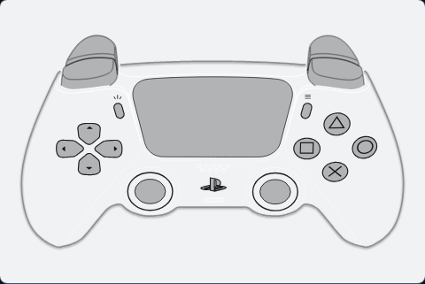
Hell – Kombination · 65/65 %
Gemischt · Ghost


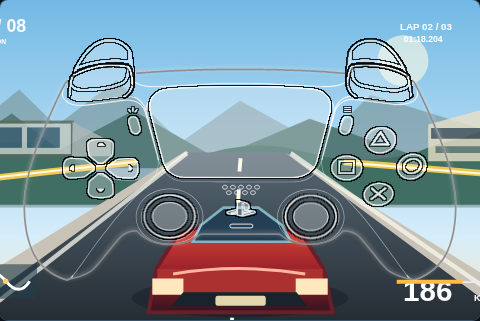
Gemischt – Nur Kantenlicht · 100/0 %


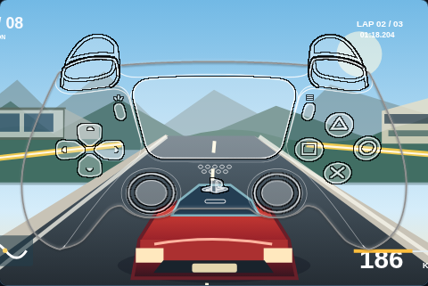
Gemischt – Kombination · 65/65 %
2D-Kontrollzustände und Modelle

DualSense – Solid und Ghost neutral (480px)

Stick-Bewegung 100% – beweglicher Ring


Stick 100% + L3/R3 – Ring und Mitte weiß

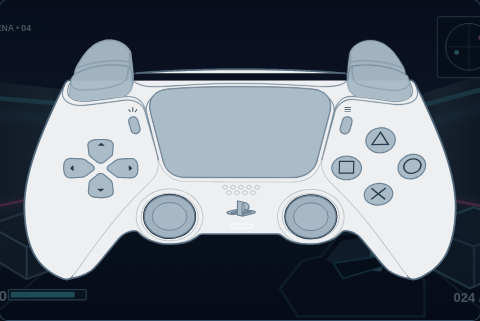
DualSense – L2/R2 0%

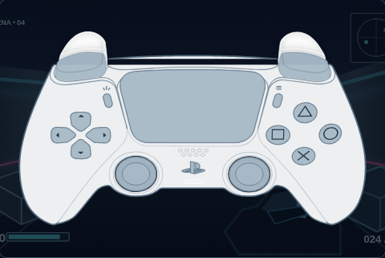
DualSense – L2/R2 100%

Face-Symbole an

Face-Symbole aus

Xbox Series – Auto

Xbox Series – Hell

DualShock 4 – Auto

DualShock 4 – Dunkel
Frühere Revisionen
- Lade Versionshistorie …